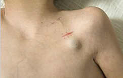
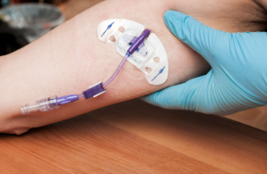
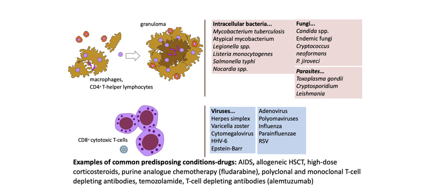

Febrile Neutropenia
Associate Professor of Infectious Diseases
Department of Molecular Medicine, University of Padua
 |
https://github.com/Russlewisbo
Slides and course materials: www.padovaid.com
Objectives
What are the most common infections associated with short versus prolonged neutropenia?
How does the presentation of skin, mucocutaneous lesions, abdominal pain or pneumonia change the infection differential diagnosis?
What are common empiric antimicrobial regimens used to treat patients while awaiting diagnostic results?
Normal hematopoiesis
Myeloid lineage (neutrophils / platelets)
- Homogeneous, terminally differentiated effector cells
- Short-lived, post-mitotic
- Continuous high-throughput production
- Rapid quantitative recovery after chemotherapy (≈2–3 weeks)
Lymphoid lineage (T, B, NK cells)
- Highly heterogeneous populations
- Mix of short-lived effector cells and long-lived memory cells
Chemotherapy-associated neutropenia
Antineoplastic chemotherapy impairs proliferation of normal hematopoietic progenitor cells
Obliteration of the mitotic pool
Depletion of the marrow reserve
Antineoplastic drugs, glucocorticoids and irradiation also interfere with the function of non-proliferating granulocytes, resulting in:
Decreased chemotaxis
Diminished phagocytic capacity
Defective intracellular killing
Corticosteroids
Paradoxical effects:
- ↑ Granulocytopoiesis (apparent benefit)
- ↓ Accumulation at infection site
- ↓ Adherent capacity
- ↓ Chemotaxis
- ↓ Phagocytosis
- ↓ Intracellular killing
Immunity and innate immune cells
| Cells | Molecules | Active against |
|---|---|---|
PMNs
|
|
Bacteria, fungi |
| Macrophages |
|
Intracellular pathogens (depletes arginine) |
| Eosinophils |
|
Worms (extracellular) |
| Natural killing (NK) cells |
|
Viral or bacterial infected cells |
Quantitative relationship of neutropenia
with infection risk

Granulocytes (neutrophils)
- Chemotherapy & radiation → neutropenia
- Duration: Nadir 10-14 days, duration 3-4 weeks or longer
- Primary risk factor for bacterial and fungal infections
- Risk of infection increases with:
- Depth of neutropenia
- Duration of neutropenia
- Concurrent organ dysfunction
Risk by disease type
| Disease | Risk Level |
|---|---|
| Acute myeloid leukemia | Highest |
| High-risk ALL, Relapsing leukemia | High |
| Low-risk ALL, CLL, Myeloma | Moderate |
| Non-Hodgkin lymphoma | Lower |
| Solid tumors | Lowest |
Clinical signs of infection are muted in neutropenic patients
| Signs and Symptoms | <100 | 101-1000 | >1000 |
| Fever | 98 | 90 | 76 |
| Fluctuance | 6 | 36 | 52 |
| Fissure or ulceration | 21 | 42 | 54 |
| Exudate | 11 | 64 | 91 |
| Purulent sputum | 8 | 67 | 84 |
| Pyuria | 11 | 63 | 97 |
The integument
Skin:
- Chemotherapy → hair loss, dryness
- Catheters → direct microbial access
- Broken skin → S. aureus, gram-negatives
Oropharynx:
- Xerostomia + antibiotics → thrush, bacterial overgrowth

Alimentary Tract
- Microbiome disruption → Clostridioides difficile
- Mucosal barrier injury from chemotherapy
- Facilitates bacterial translocation
- Neutropenia allows progression to sepsis
Chemotherapy-associated dysbiosis

Model of mucosal barrier injury

Mucositis
Which pathogens translocate?

Most common bacterial pathogens

- Infectious source documented in only 20-30% of episodes
- Bacteremia documented in 10-25% of patients with fever
- Aerobic Gram-positive and Gram-negative
Sequence of infection
Risk of infection vs. duration of neutropenia
Phase I (1-10 days)
CONS - Staphylococcus spp.
Enterobacterales
Viridans streptococci
Anaerobes
Enterococcus
Clostroides diffile
Herpes simplex
+/- Candida spp.
Phase II (10-27 days)
Phase I pathogens plus
Methicillin-resistant S. aures (MRSA)
Vancomycin-resistant Enterococcus (VRE)
Resistant gram-negative bacteria
Stenotrophomonas maltophilia
- Herpes simplex
- +/- Candida spp.
Phase III (> 27 days)
- Phase I&II pathogens, plus + Invasive molds
Invasive pulmonary aspergillosis risk vs. neutropenia

Non-neutropenic risk factors
Mucositis - Barrier disruption, translocation
Central venous catheters - Entry point for pathogens
Microbiome alterations - Chemotherapy-induced dysbiosis
Immunosuppressive drugs - T-cell depletion
Biologic agents - Targeted immune effects
CVC-related infection rates
| Catheter Type | Per 100 devices | Per 1000 catheter-days | |
|---|---|---|---|
| Hickman/Broviac |  |
22.5 | 1.6 |
| Port-a-cath |  |
3.5-4 | 0.1 |
| PICC |  |
3.1 | 1.1 |
Example Biologic agents and infection risk
| Agent | Key Infections |
|---|---|
| Rituximab (anti-CD20- Bcell depletion) | HBV reactivation, PML |
| Brentuximab (anti-CD30 +lymphoma cells) | PCP, PML |
| Bortezomib (26s proteasome inhibitor-Mantel cell lymphoma, myeloma) | VZV reactivation |
| Ruxolitinib (JAK1/2 kinase inhibitor) | VZV, TB |
| Idelalisib (P13K-delta-Bcell receptor inhibitor) | HSV, CMV, PCP |
| Ibrutinib (Bruton’s tyrosine kinase-B cell receptor) | IFD (with steroids) |
Impaired cell-mediated immunity increases the spectrum of possible pathogens

:Summary-Key pathogens
Changing bacterial epidemiology
Historical trend:
- 1980s-2000s: Gram-positive predominance
- Recent: Gram-negative resurgence
Current ratio (ECIL-4 surveillance):
- Gram-positive: 55%
- Gram-negative: 45%
Resistant pathogens of concern
Gram-negative:
- ESBL-producing Enterobacterales
- Carbapenem-resistant Enterobacterales (CRE)
- Stenotrophomonas maltophilia (carbapenem-resistant)
- MDR Pseudomonas aeruginosa
Gram-positive:
- MRSA
- Vancomycin-resistant enterococci (VRE)
Risk factors for resistant infections
- Previous infection/colonization with MDR organism
- Prior broad-spectrum antibiotic exposure
- Healthcare-associated infection
- Prolonged hospitalization
- Urinary catheter
- Older age
- ICU admission
Fungal pathogens
Most Common:
- Aspergillus species (now > Candida in hematology due to fluconazole prophylaxis)
- Candida species (increasing non-albicans)
Emerging concerns:
- Candida auris - MDR, biofilm-forming
- Azole-resistant Aspergillus fumigatus
- Mucorales (increasing in some centers)
Breakthrough fungal infections on antifungal prophylaxis
Invasive aspergillosis risk
| Population | Incidence |
|---|---|
| Acute myelogenous leukemia (induction) | 7.9% |
| Acute lymphocytic leukemia (adults) | 4.3-11.7% |
| Chronic myelogenous leukemia | 2.3% |
| Chronic lymphocytic leukemia, lymphoma, myeloma |
<1% |
| Autologous HSCT | 0.3-2% |
| Allogeneic HSCT | 8-15% |
Viral infections
Herpes viruses:
- Herpes simplex 1&2 (HHV 1&2) reactivation: 60% of seropositive with acute leukemia
- Varicella zoster (HHV3) : Increased with bortezomib, ruxolitinib
- Epsein-barr virus (HHV4): Increased with T-cell suppression, post-transplant lymphoproliferative disorder (PTLD)
- Cytomegalovirus (HHV5): T-cell suppressing regimens- pneumonitis, colitis, hepatitis
- HHV-6: Encephalitis in transplant patients
- HHV-7:Roseola-like illness
- HHV8: Kaposi’s sarcoma
Respiratory viruses:
- Influenza, RSV, parainfluenza
- SARS-CoV-2: High morbidity/mortality in cancer patients
Prophylaxis strategies
Antibacterial prophylaxis
Fluoroquinolone prophylaxis:
| Pros | Cons |
|---|---|
| Reduces febrile episodes | Increasing resistance, especially selection of ESBL |
| Reduces BSI | No consistent mortality benefit (recent data) reduction in febrile episodes |
| Oral administration | Drug interactions |
| QT prolongation, tendinopathy |
Current status: Controversial; some guidelines no longer recommend especially in centeres with high levels of resistance
Antifungal prophylaxis - Key points
When to use mold-active prophylaxis:
- Anticipated IFD incidence >8%
- AML/MDS induction chemotherapy
- High-risk ALL
- Relapsing leukemia
Posaconazole:
- Number needed to treat (NNT) to prevent 1 IFD: 16
- Number needed to treat (NNT) to prevent 1 death: 27
Antifungal prophylaxis
| Agent | Dose | Indication |
|---|---|---|
| Fluconazole | 400 mg daily | Candidiasis risk only |
| Posaconazole tablets | 300 mg BID day 1, then 300 mg daily | AML/MDS/ BMT |
| Voriconazole | 200 mg BID | Alternative (TDM needed) |
| Isavuconazole | 200 mg daily (after loading) | Alternative, not “approved” for prophylaxis indication |
Problem: Drug interactions with agents metabolized through CYP3A4. Interactions are less severe with fluconazole and isavuconazole (weak CYP3A4 inhibitors) vs. posaconazole and voriconazole (strong CYP3A4 inhibitors)
Pneumocystis prophylaxis
Patients at risk- Indications:
- Acute lymphocytic leukemia (all ages)
- Fludarabine, alemtuzumab, idelalisib therapy (T-cell suppressing chemotherapy)
- Corticosteroids ≥10-20 mg/day × 4 weeks
- CD4 <200/µL
First-line: TMP-SMX 160/800 mg 3×/week
Alternatives: Dapsone, atovaquone, aerosolized pentamidine
Antiviral prophylaxis
HSV/VZV:
- Acyclovir 800 mg BID or valacyclovir 500 mg BID
- For all seropositive patients with acute leukemia
- Required with bortezomib, alemtuzumab, idelalisib
HBV:
- Screen all patients before chemotherapy
- Entecavir or tenofovir for HBsAg-positive
- Continue 6-18 months post-chemotherapy
Granulocyte-colony stimulating factor (G-CSF)
Vaccination recommendations
| Vaccine | Timing | Notes |
|---|---|---|
| Influenza | Annual | Avoid during intensive chemo |
| Pneumococcal (PCV) | Before chemo if possible | Better response than PPSV23 |
| SARS-CoV-2 | 3-dose primary + boosters | All patients and contacts |
| Herpes zoster (RZV) | VZV seropositive | Inactivated vaccine |
Management of febrile neutropenia
Definition of fever
For starting empirical antibiotics:
- Single temperature ≥38.5°C (oral/axillary), OR
- Two measurements ≥38.0°C separated by ≥1 hour
Also treat infection suspected with:
- Hypothermia (<35.5°C)
- Altered mental status
- Hypotension
- Skin/mucosal lesions
Classification of episodes
- Microbiologically documented with bacteremia - Positive blood culture
- Microbiologically documented without bacteremia - Other site culture positive
- Clinically documented - Signs/symptoms without microbiologic proof
- Fever of unknown origin (FUO) - No clinical or microbiologic documentation
Risk stratification: MASCC score
| Variable | Points |
|---|---|
| Burden of illness: none/mild | 5 |
| Burden of illness: moderate | 3 |
| No hypotension | 5 |
| No COPD | 4 |
| Solid tumor/no prior fungal infection | 4 |
| Outpatient status | 3 |
| No dehydration | 3 |
| Age <60 years | 2 |
Risk stratification: CISNE score
| Variable | Points |
|---|---|
| ECOG PS ≥2 | 2 |
| Hyperglycemia stress | 2 |
| COPD | 1 |
| Cardiovascular disease | 1 |
| Mucositis grade ≥2 | 1 |
| Monocytes <200/µL | 1 |
Treatment strategies
Two main approaches:
Escalation:
- Start narrow, broaden if needed
- For stable patients without risk of MDR pathogens
De-escalation:
- Start broad, narrow when microbiology results available
- For unstable patients or MDR colonization
Escalation strategy
Day 0:
- Anti-Pseudomonas β-lactam monotherapy
- Piperacillin-tazobactam, cefepime, or ceftazidime
Day 2-4 (if needed):
- Add vancomycin if skin/catheter infection
- Add aminoglycoside and/or change to anti-pseudomonal carbapenem if septic
- Add antifungal if persistent fever
De-escalation strategy
Day 0:
- Carbapenem (meropenem) ± aminoglycoside
- Or targeted therapy based on colonization
Day 2-4:
- De-escalate based on cultures
- Stop aminoglycoside if not needed
- Narrow spectrum if pathogen identified
Key antibiotics for empiric treatment
| Drug | Adult Dose | Administration | When |
|---|---|---|---|
| Piperacillin-tazobactam | 4.5 g q6-8h | Extended/continuous infusion | Low risk of ESBL |
| Cefepime | 2 g q8h | Extended infusion | Low risk of ESBL- active at lower inoculum |
| Meropenem | 1-2 g q8h | Extended infusion (3-6h) | Higher risk of ESBL |
| Ceftazidime-avibactam | 2.5 g q8h | 2-hour infusion | Higher risk of KPC carbapenemase |
| Ceftolozane-tazobactam | 1.5-3 g q8h | 1-hour infusion | Higher risk of MDR P. aeruginosa |
Glycopeptide use (to cover MRSA)
Add vancomycin or alternative for:
- Suspected catheter-related infection
- Skin/soft tissue infection
- Known MRSA colonization
- Severe sepsis with hypotension
- Pneumonia
- Prior MRSA infection
Stop after 48-72h if no gram-positive pathogen identified
Duration of therapy
For FUO:
- If afebrile 48-72h + clinically stable: consider stopping
- Short courses (72h) shown safe in selected patients
For documented infection:
- Guided by pathogen, site, and response
- Generally until neutrophil recovery and clinical cure
Antifungal therapy
Empirical vs diagnostic-driven approach
Empirical:
- Start antifungal after 4-7 days persistent fever
- Traditional approach; high antifungal exposure-overtreatment of patients
Diagnostic-driven:
- Use biomarkers (GM, BDG) + CT imaging
- Reduces unnecessary antifungal use
- Requires good diagnostic infrastructure
GM -galactomannan ELISA test, BDG- β-D-glucan
Diagnostic tools
| Test | Target | Specimen |
|---|---|---|
| Galactomannan (GM) | Aspergillus | Serum, BAL |
| β-D-glucan (BDG) | Broad fungi (not Mucorales) | Serum |
| PCR | Species-specific | Blood, BAL |
| CT imaging | Structural changes | Chest/sinuses |
Mucormycosis
Antifungal Selection
| Indication | First-line |
|---|---|
| Invasive aspergillosis | Voriconazole or isavuconazole |
| Mucormycosis | Liposomal amphotericin B |
| Candidemia | Echinocandin |
| Empirical therapy | Liposomal amphotericin B or caspofungin |
Specific infections
Central venous catheter (CVC) infections

{kind=link}
{kind=link}
{kind=link}
{kind=link}
{kind=link}
{kind=link}
{kind=link}
{kind=link}
Central venous catheter (CVC) infections
Management depends on:
- Organism (CoNS vs S. aureus vs gram-negatives)
- Presence of tunnel/pocket infection
- Clinical stability
Catheter removal indicated for:
- S. aureus, Candida, Pseudomonas bacteremia
- Tunnel infection
- Persistent bacteremia despite antibiotic therapy
Skin lesions

Common presentations:
- Ecthyma gangrenosum — necrotic ulcer with black eschar; classic for P. aeruginosa or invasive molds (Aspergillus, Fusarium)
- Disseminated papules/nodules — Candida, Fusarium, or Aspergillus septate emboli
- Leukemia cutis — infiltration by circulating blasts
- Intravascular hemolysis — rapidly spreading crepitant necrosis from Clostridium perfringens septicemia
Ecthyma gangrenosum
Clinical features:
- Begins as erythematous macule → hemorrhagic bullae → necrotic ulcer with black eschar and erythematous halo
- Usually found on buttocks, perineum, axillae, and extremities
- May appear without bacteremia (direct skin inoculation)
Most common pathogens:
- Pseudomonas aeruginosa (bacteremia or local invasion)
- Invasive molds: Aspergillus spp., Fusarium spp.
- Less common: other gram-negative rods, Stenotrophomonas, Candida
Urgent evaluation:
- Blood cultures × 2
- Skin biopsy for histopathology + bacterial, fungal, and mycobacterial cultures
- CT imaging to assess for dissemination
Empiric management:
- Add or broaden anti-Pseudomonas coverage
- Add mold-active antifungal therapy (liposomal amphotericin B or voriconazole) in high-risk patients pending biopsy results
Skin and soft tissue: treatment approach
{kind=link}
Oral-Upper GI infections
Candida- Thrush, esophagitis (odynophagia, retrosternal pain)
Vesicular lesions- painful grouped lesions→ulceration
{kind=link}
Disseminated HSV- widespread vesicular rash , hepatitis (↑ AST/ALT, sometimes severe), pneumonitis
Pneumonia
up to 60% of patients may have findings of pneumonia on CT


Common CT findings

Bronchoscopy
{kind=link}
Neutropenic enterocolitis (typhlitis)

Neutropenic enterocolitis (typhlitis)
Key features:
- Fever, abdominal pain, diarrhea
- RLQ tenderness
- CT: Bowel wall thickening
Management:
- Broad-spectrum antibiotics including anaerobes
- Bowel rest, NG suction if obstruction
- Surgery only for perforation/hemorrhage
Clostridioides difficile colitis
First-line treatment: Stop unnecessary antibiotics →oral vancomycin 125 mg QID for 10 days or fidaxomicin 200 mg BID for 10 days
Fulminant disease: Oral vancomycin 500 mg QID (or via NG tube) combined with IV metronidazole 500 mg TID; →consider rectal vancomycin instillation if ileus is present
Ongoing/worsening CDI: Fidaxomicin if initially treated with vancomycin→ fecal microbiota transplant (if not neutropenic)
CDI resolved but at risk of recurrence: Consider continuing vancomycin or fidaxomicin if diarrhea recurs, and prophylactic vancomycin during subsequent antibiotic courses → taper regimens, fecal transplant (if patient not neutropenic) or bezlotoxumab
{kind=link}
How to assess clinical response
in febrile neutropenic patient?
Documented infection: Treat for the appropriate duration based on the specific pathogen and site (see relevant guidelines)
- Duration of treatment is not necessarily longer in neutropenia
Fever resolved, unknown origin, ANC ≥500: Discontinue empiric antibiotics.
Fever resolved, unknown origin, ANC <500: Options include discontinuing therapy, de-escalating to prophylaxis, or continuing the current regimen until neutropenia resolves.
Not responding/clinically worsening: Broaden antimicrobial coverage based on clinical and microbiologic data, obtain imaging, consider adding G-CSF, and obtain ID consultation.
Persistent fever ≥4 days on empiric antibiotics: Consider adding antifungal therapy with anti-mold activity; duration guided by clinical course, neutrophil recovery
Typical treatment duration (NCCN 2025 Guidelines)
Causes of treatment failure
Antimicrobial stewardship
Core components
- Surveillance - Resistance patterns, consumption, outcomes
- Protocols - Local guidelines for prevention and treatment
- Rapid diagnostics - Enable early de-escalation
- Dose optimization - TDM for azoles, drug interaction screening, PK/PD-guided dosing
Requires multidisciplinary collaboration
Key stewardship interventions
- Timely de-escalation based on culture results
- Duration optimization (avoid excessive courses)
- IV to PO conversion when appropriate
- Prospective audit and feedback
- Restricted antibiotic authorization
- Education for prescribers
Summary: Key takeaways
- Neutropenia is the primary risk factor, but many others contribute
- Epidemiology is shifting toward gram-negatives and MDR
- Prophylaxis must be tailored to risk and local epidemiology
- Febrile neutropenia requires prompt empirical therapy
- Escalation vs de-escalation strategies depend on patient risk
- Antifungal therapy can be empirical or diagnostic-driven
- Stewardship is essential to preserve antimicrobial efficacy